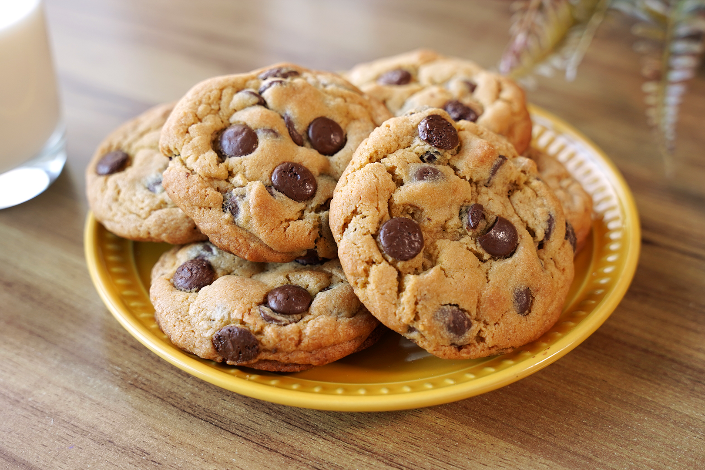

Um delicioso cookie:
Essa receita é prática e deliciosa, leva apenas 7 ingredientes, e é ótima para matar aquela vontade de um docinho depois do almoço!
Receita:
| Ingrediente | Quantidade |
|---|---|
| Manteiga | 1 colher de sopa |
| Açúcar Cristal | 1 colher de sopa |
| Açúcar Mascavo | 1 colher de sopa |
| Gema de ovo | 1 unidade |
| Extrato de baunilha | 1 colher de café |
| Farinha de Trigo | 2 colheres de sopa |
| Chocolate | A gosto |
